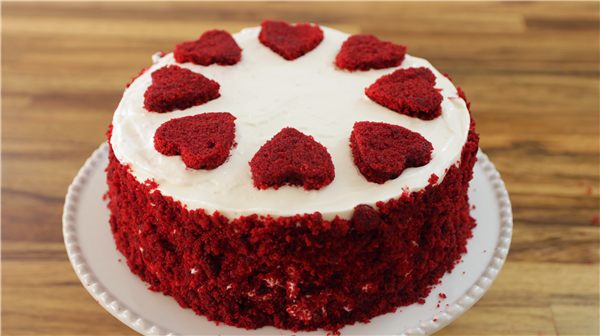

1/2 cup (113 grams) unsalted butter, at room temperature
1/2 cup (113 grams) unsalted butter, at room temperature
1 1/2 cups (300 grams) granulated white sugar
2 large (100 grams) eggs, at room temperature
1 teaspoon (4 grams) pure vanilla extract
1 cup (240 ml) buttermilk, at room temperature
2 tablespoons (22 grams) liquid red food coloring (I use McCormick's brand)
1 teaspoon (4 grams) white distilled vinegar
1 teaspoon (4 grams) baking soda
Cream Cheese Frosting:
8 ounces (227 grams) cream cheese, at room temperature
8 ounces (227 grams) Mascarpone cheese, at room temperature
1 teaspoon (4 grams) pure vanilla extract
1 cup (115 grams) confectioners' (icing or powdered) sugar, sifted
1 1/4 cups (300 ml) cold heavy whipping cream (cream with a 35-40% butterfat content)

Directions
For the cake :
Preheat your oven to 350 degrees F (180 degrees C) and place the oven rack in the center of the oven. Butter two - 9 inch (23 cm) round cake pans and line the bottoms of the pans with parchment paper.
In a bowl, sift the flour with the salt and cocoa powder.
In the bowl of your electric stand mixer, fitted with the paddle attachment (or with a hand mixer), beat the butter until smooth. Add the sugar and beat, on medium high speed, until light and fluffy (about 3 to 4 minutes). Add the eggs, one at a time, beating well after each addition. Scrape down the sides and bottom of the bowl as needed. Add the vanilla extract and beat until combined.
In a measuring cup, carefully whisk the buttermilk with the red food coloring. With the mixer on low speed, alternately add the flour mixture (in three additions), with the buttermilk (in two additions), beginning and ending with the flour.
In a small cup combine the vinegar and baking soda. Allow the mixture to fizz and then quickly mix or fold into the cake batter.
Working quickly, divide the batter evenly between the two prepared pans (about 520 grams in each pan) and smooth the tops with an offset spatula or the back of a spoon. Bake in the preheated oven for approximately 25 minutes, or until a toothpick inserted into the center of the cakes comes out clean (the cakes will just be starting to pull away from the sides of the pans). Cool the cakes in their pans on a wire rack for 10 minutes. Then place a wire rack on top of the cake pan and invert, lifting off the pan. Remove the parchment paper and re-invert onto a oiled wire rack (this will prevent the cakes from sticking to the wire rack). Once the cakes have completely cooled, wrap in plastic, and place the cake layers in the refrigerator for a couple of hours or until firm. (This is done to make filling and frosting the cakes easier.)
For the Cream Cheese Frosting:
In the bowl of your electric stand mixer, fitted with the paddle attachment (or with a hand mixer), beat the cream cheese and mascarpone cheese until smooth. Add the vanilla extract and confectioners sugar and beat until smooth and fluffy. In a clean bowl, using the whisk attachment (or with a hand mixer), whip the heavy whipping cream until soft peaks form. Gradually fold in, or beat, the whipped cream into the cream cheese frosting until smooth and of spreading consistency.
Assembling
Place one cake layer (top of the cake facing down) on a 9 inch (23 cm) cake circle and then place on a cake turntable or your serving plate. Spread the cake layer with a layer of frosting. Place the second layer of cake on top of the frosting, top of the cake facing down, and frost the top and sides of the cake.